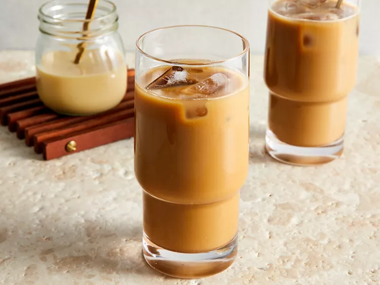

Home
Vietnamese Iced Coffee

Description
A strong Vietnamese iced coffee recipe with sweetened condensed milk. Chilled on ice, this makes an unbeatable Southeast Asian treat. Even those who only take their coffee black will like this. Serve it on hot summer days or as an evening treat. We learned this in Vietnam, and now drink almost all our espresso this way.
Ingredients
- 4 cups water
- ½ cup dark roast ground coffee beans
- ½ cup sweetened condensed milk, divided
- 16 ice cubes
Steps
- Brew water with coffee using your preferred method to make coffee.
- Spoon 2 tablespoons sweetened condensed milk into each of 4 coffee cups.
- Pour 1 cup fresh hot coffee into each cup and stir to dissolve the milk.
- Serve cups of coffee along with 4 tall glasses filled with 4 ice cubes each and a long-handled spoon.
- Pour hot coffee over ice cubes and stir briskly with the long-handled spoon to chill the coffee.